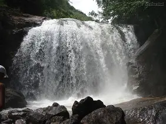
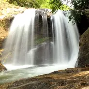
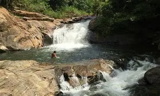
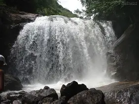
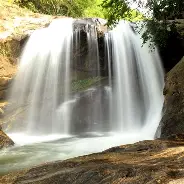
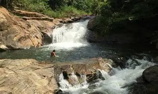

Sobre o lugar
A Cachoeira da Amorosa é um refúgio natural que encanta logo no
primeiro contato. Escondida em meio à
vegetação
preservada, ela revela um cenário de tranquilidade, beleza e conexão
profunda com a natureza. Suas quedas
d’água
se espalham suavemente sobre formações rochosas, criando um espetáculo
natural marcado pelo som constante da
água e pelo frescor que envolve todo o ambiente.
A queda principal se divide em dois fluxos, formando uma cortina
delicada que desliza pelas pedras e
desemboca
em um poço de águas claras e convidativas. A tonalidade esverdeada da
água reflete a mata ao redor, criando
um
contraste harmonioso com as rochas de tons terrosos. Em dias de sol, a
luz atravessa a copa das árvores e
ilumina o poço, revelando detalhes do fundo e tornando o local ainda
mais especial para banho e
contemplação.
O entorno da cachoeira é composto por mata nativa, com árvores de
médio e grande porte, arbustos e plantas
típicas da região, o que garante sombra natural e uma sensação
constante de frescor. A presença da vegetação
densa também favorece a biodiversidade local, sendo comum ouvir o
canto de pássaros e observar pequenos
animais
ao longo do caminho.
O acesso até a Cachoeira da Amorosa faz parte da experiência. O
percurso, geralmente realizado por trilha,
permite um contato gradual com o ambiente natural, preparando o
visitante para a beleza que o espera ao
final.
Ao chegar, o clima é de acolhimento e serenidade, tornando o local
ideal tanto para quem busca descanso
quanto
para quem deseja momentos de lazer em meio à natureza.
Além do banho refrescante, o espaço ao redor da cachoeira convida à
contemplação, à fotografia e a pequenas
pausas para relaxar. É um lugar perfeito para desacelerar, respirar
fundo e se reconectar com o essencial,
longe
do barulho urbano e da rotina acelerada.
A Cachoeira da Amorosa é, acima de tudo, um convite ao cuidado e ao
respeito com o meio ambiente. Sua beleza
preservada reforça a importância da visita consciente, garantindo que
esse cenário continue encantando quem
passa por ali. Um destino que combina simplicidade, encanto natural e
experiências memoráveis para todos que
colocam os pés no caminho.
Informações rápidas
Galeria
 





💡 Dicas importantes
• Evite dias de chuva: o solo pode ficar escorregadio e o nível da
água pode subir.
• Preserve o local: leve todo o lixo de volta e evite fazer barulho
excessivo para não interferir na
fauna.
• Cuidado com os buracos na água.